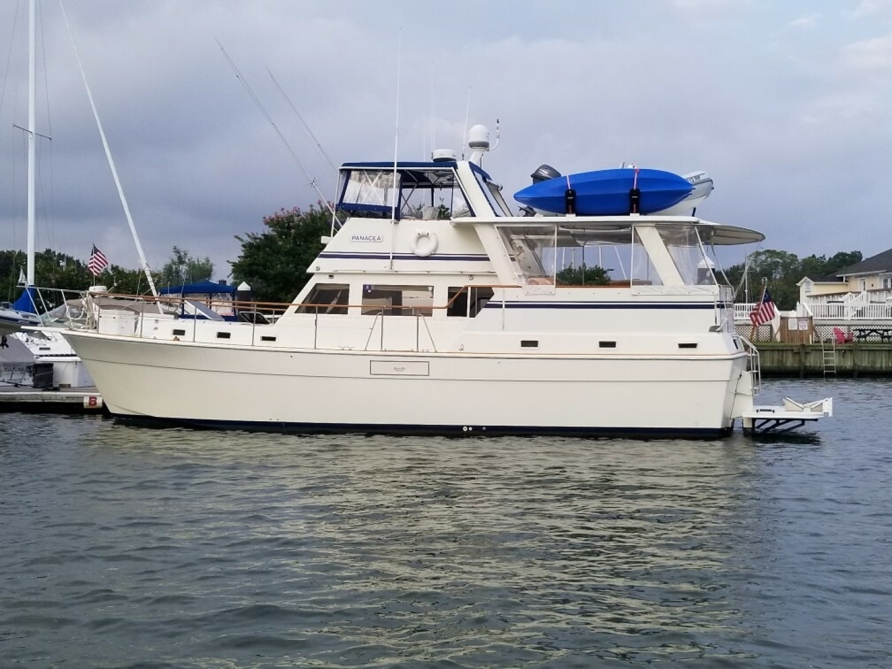

B-Atlas Boat Guide · GULF-44-MC
Gulfstar 44 Motor Cruiser Motor Cruiser
1978–1980
The Gulfstar 44 Motor Cruiser reflects Gulfstar's broad 1970s–1980s range from sail-derived trawlers and motorsailers to larger motor yachts. The specific model's hull form, speed and accommodation must be judged independently rather than treating all Gulfstars as conventional trawlers.

- LOA
- 44.42 ft
- LWL
- Unknown
- Beam
- 14.5 ft
- Draft
- 4 ft
- Hull behaviour
- Displacement
- Fuel
- Diesel
- Propulsion
- Shaft
- Engine configuration
- Twin Perkins diesels
- Boat family
- Motor Yacht
- Construction
- Fiberglass hull and superstructure
Best for
- Cruising buyers who understand the specific Gulfstar generation
- Owners comfortable maintaining older systems-rich fiberglass yachts
- Inland and coastal cruising where the documented model mission fits
Trade-offs
- Model families differ substantially in hull construction and performance
- Age makes tanks, deck penetrations, wiring and machinery condition critical
- Larger models carry significant systems, air-draft and operating-cost burdens
Known concerns
- No model-specific concern has been promoted to B-Atlas’s evidence threshold. This does not mean the model has no age-, condition- or hull-specific risks.
Inspection focus
- Verify exact model and generation against hull documentation
- Inspect deck/core areas, windows and structural penetrations
- Inspect fuel/water tanks, wiring, plumbing, generator and HVAC systems
- Inspect engines, exhaust, cooling, shafts, rudders and keel
- Confirm air draft and actual displacement for intended route and haul-out
Continue researching
Related boat models
Gulfstar 49 Motor Yacht Motor Yacht
49 ft · Semi-Displacement
Gulfstar 43 Trawler Trawler
43.33 ft · Semi-Displacement
Island Gypsy 44 Motor Cruiser Motor Cruiser
44.25 ft · Semi-Displacement
Silverton 372 / 392 Motor Yacht SideWalk Motor Yacht
43.75 ft · Planing
Gulfstar 36 Trawler Trawler
36.25 ft · Semi-Displacement
About this record
B-Atlas preserves uncertainty: missing information remains unknown rather than being treated as a negative. Specifications and guidance describe the model record; individual boats can differ by year, equipment, refit and condition.